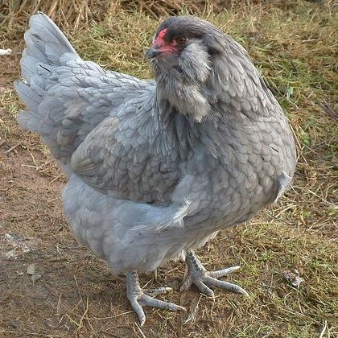

Physical Makeup
Ameraucanas are a u-shaped chicken with an upright tail and a sleek muff that blends into its beard.
Their red pea comb means they can tolerate cold temperatures very well, since the pea comb rarely gets frostbitten.
Temper
A sure fire family chicken, the Ameraucana is a friendly and laid back soul that will be quite docile around any fellow flock member.
Despite this disposition, they aren't likely to be a lap chicken like a Silkie or a Polish hen, as they tend to keep to themselves and stay out of trouble for the most part.
This isn't to say that they don't enjoy having you around, however.
They'll certainly tolerate you and give you some lovin' but they aren't likely to stick around long enough for the cuddles and the pets.
Origin
In the 1930s, Ward Brown Jr saw a painting of a chicken with blue eggs.
Several decades and dozens of crossbreeds later, the Ameraucana chicken was born.
The main line came from the Araucana—a chicken from Chile that occasionally laid blue eggs (but had a number of genetic defects that made it less than ideal).
By 1984, when they became standardized, the blue-colored eggshell had stabilized and is now considered normal for the breed.
Ameraucana's are a much healthier breed than their ancestor, the Chilean Araucana, and they lay more dependably too.
Weight
Ameraucana hens are on the lighter side of the average chicken and weigh in around 5.5 lbs.
Ameraucana roosters are around 6.5 lbs. and both are considered “light fowl.”
Because they are considered light fowl, the bantam variety of Ameraucanas are tiny!
They will weigh in at no more than 1.5 lbs. for a hen and will barely touch 2 lbs. for a male bantam.
Colors
While there are 9 standardized varieties, the Black Ameraucana is by far the most popular.
Other colors include Blue, Blue Wheaten, Brown Red, Buff, Wheaten, Silver, and White.



Uses
The Ameraucana has a moderate egg laying ability.
Their egg production isn't high enough to be used by the commercial egg industry but they are favoured by backyard chicken owners.
They're not a good source for meat as they are small chickens.
Eggs
Ameraucanas will lay up to four blue eggs per week, giving you around 200 per year.
Not bad for a smaller chicken!
They have been known to start laying later than a typical chicken, but this all depends on the individual.
Some have noted that Ameraucanas might not lay their first egg for seven months, but that is a bit later than the average.
The broodiness of Ameraucanas depends on the strain of the breed.
Many Ameraucana chickens are known to go broody, however, and will steal other eggs or hop on other nests to sit on other eggs when they are broody.
If one of their eggs hatches, they are known to make very attentive mothers.
If your Ameraucana goes broody and you're reliant on their eggs, placing them into a wire cage (like a dog kennel) will take care of their broodiness pretty quickly.
They are dissuaded from broodiness a lot quicker than breeds like the Silkie, who looooove going broody.
Pros and Cons
PROS
➳ Beginner Friendly
➳ Excellent foragers
➳ Light blue eggs
➳ Cold and heat hardy
➳ Good layers
➳ Docile and curious
CONS
➳ Matures slowly
➳ Needs open space
➳ Usually never a purebreed
➳ Do not enjoy being handled
➳ Less meat than average
➳ Hatched chicks prone to cross beak